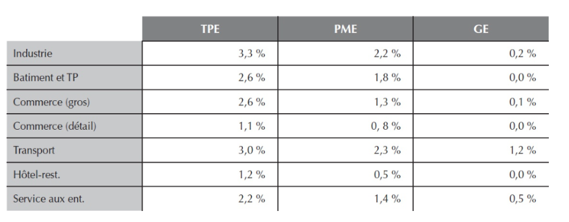

Revue de littérature
Introduction
La défaillance d’une entreprise se caractérise par un état d’insolvabilité établi à un moment donné. Cette situation engendre un processus économique, juridique voire judiciaire pour l’entreprise. Selon la Banque de France, la défaillance est qualifiée par “l’ouverture d’une procédure collective donnant lieu au dépôt d’une déclaration de cessation de paiement”, autrement dit, l’entreprise n’a plus les ressources nécessaires pour régler ses dettes actuelles avec ses actifs disponibles. Ce terme se distingue cependant de la notion de “cessation”, qui implique l’arrêt total de l’activité d’une entreprise. Une défaillance ne conduit donc pas nécessairement à la fin d’une entreprise.
En France, le cap symbolique des 60 000 défaillances d’entreprises a été franchi en 2024, avec plus de 63 000 cas déjà enregistrés sur les douze derniers mois. Les TPE, ces très petites entreprises de moins de dix salariés, représentent à elles seules 90% des défauts de paiement, illustrant leur vulnérabilité face aux difficultés économiques. Les secteurs de l’esthétique, de la boulangerie, de la restauration et du bâtiment sont particulièrement affectés, touchant de nombreux commerces directement en lien avec les consommateurs.
Les analyses théoriques sur les défaillances d’entreprises révèlent la complexité des facteurs influençant la survie des entreprises et mettent en évidence les dynamiques économiques, financières et stratégiques. Malécot, professeur à Paris X Nanterre, explique que les défaillances d’entreprises ne se résument pas à des difficultés financières ponctuelles, mais sont souvent le résultat de multiples pressions, dont les conditions macroéconomiques, la structure d’endettement, et la capacité des entreprises à s’adapter aux exigences du marché.
Cette étude a pour objectif de mettre en lumière les relations entre les défaillances d’entreprises de tailles différentes au sein d’un même secteur industriel, en explorant les interactions entre grandes et petites structures dans un environnement économique commun. En identifiant les facteurs qui influencent différemment la résilience des entreprises selon leur taille, nous allons chercher à comprendre comment les grandes entreprises, souvent mieux dotées en ressources, parviennent à mieux supporter les chocs économiques par rapport aux petites entreprises, plus sensibles aux fluctuations du marché. Par la suite, notre étude examinera dans quelle mesure ces relations de dépendance sont influencées par des facteurs externes, tels que la conjoncture économique et le niveau d’émissions de gaz des différents secteurs.
Défaillance
Selon La Banque de France, les procédures de défaillances sont concentrées pour l’essentiel au sein de certains secteurs. En effet, les entreprises de l’industrie, du transport et du BTP avaient en 2005, d’après Le Bulletin de La Banque de France, une probabilité de défaillance plus de deux fois supérieure à celles dans le commerce ou les services particuliers. Les défaillances d’entreprises se concentrent généralement dans les neuf mêmes secteurs, qui représentent 80 % des cas. Il s’agit principalement de la construction, du commerce de gros et de détail, ainsi que des hôtels et restaurants.
Dans le secteur de la construction, la montée des coûts des matériaux et de la main-d’œuvre, combinée à des taux d’intérêt élevés, crée un environnement incertain qui fragilise la trésorerie des entreprises. Concernant le secteur du commerce de détail et de gros, la diminution du pouvoir d’achat des consommateurs, entraînée par l’inflation, ainsi que la montée en puissance du commerce en ligne, poussent les entreprises à s’adapter rapidement. Cependant, cela n’est pas toujours réalisable, notamment pour les petites entreprises.
Enfin, l’hôtellerie-restauration, bien que soutenue pendant la pandémie, souffre maintenant de la réduction des aides publiques et de la hausse des coûts, ce qui limite sa capacité à se relever. Ensemble, ces facteurs expliquent pourquoi ces secteurs affichent des taux de défaillance élevés et font face à des défis considérables dans le climat économique actuel.
En 2023, les faillites des grandes entreprises ont connu une forte hausse, bien que les tendances diffèrent selon la taille des entreprises. Les microentreprises et les très petites entreprises (TPE) sans salarié ou avec 1 ou 2 employés, ont connu une légère normalisation des défaillances, avec une hausse de 2% par rapport à 2019. En revanche, les TPE de 3 à 9 salariés ont vu leurs défaillances augmenter de 22%, marquant un rattrapage des faillites évitées entre 2020 et 2022. Plus de 4 700 PME-ETI, comptant 10 salariés ou plus, ont fait faillite, représentant une hausse de 37% par rapport à 2019, soit environ 1 300 entités. Cette situation indique qu’environ la moitié des défaillances évitées durant la période 2020-2022 se sont concrétisées cette année.
Ces chiffres soulignent l’importante contribution des PME et TPE aux défaillances d’entreprises. En effet, les grandes entreprises, bien que souvent plus endettées que les PME, affichent un risque de défaillance inférieur. Lorsqu’une PME se retrouve dans une situation financière difficile, la cessation de paiements et la défaillance sont souvent les issues principales. En revanche, les grandes entreprises disposent de solutions telles que la restructuration ou des plans de reprise négociés en amont, leur permettant d’éviter l’insolvabilité. Par conséquent, les PME, et plus encore les TPE, affichent les taux de survie les plus bas, soulignant leur grande vulnérabilité face aux pressions économiques.

Dans ce tableau, nous constatons d’abord que, en 2004, les grandes entreprises sont les moins défaillantes. Le secteur le plus touché est celui du transport, avec un taux de défaillance de 1,2%, tandis que les secteurs du bâtiment, des travaux publics, ainsi que de l’hôtellerie et de la restauration ne présentent aucune défaillance. En ce qui concerne les PME, les taux de défaillance varient : ils s’élèvent à 0,5% pour l’hôtellerie et la restauration et atteignent 2,3% pour le transport. Ainsi, le transport se révèle être le secteur le plus impacté, tandis que l’hôtellerie et la restauration sont les moins touchées. Pour les TPE, la situation est légèrement différente, car l’industrie est le secteur le plus affecté avec un taux de défaillance de 3,3%, suivi du transport à 3%. Le secteur le moins touché est le commerce de détail, avec un taux de 1,1%, suivi de l’hôtellerie et de la restauration à 2,3%.
En conclusion, l’analyse des défaillances par secteur d’activité en 2004 met en évidence des différences notables entre les grandes entreprises, les PME et les TPE. Les grandes entreprises semblent mieux résister aux défaillances, tandis que les PME affichent des taux variés, le secteur du transport étant le plus vulnérable. Pour les TPE, l’industrie émerge comme le secteur le plus touché, soulignant une certaine fragilité par rapport aux autres secteurs.
Les grandes entreprises semblent ainsi moins sujettes au risque de défaillance, ce qui renvoie au concept de too big to fail apparue dans les années 1980 qui signifie que, plus une entreprise est grande, moins elle risque de défaillir. Ce fait a été observé lors de divers évènements qui ont marqué la conjoncture économique du pays. Toutefois, la crise économique et financière de 2008 a remis en question ce constat, montrant que même les grandes entreprises pouvaient être vulnérables. Un article proposé par le Conseil de Stabilité Financière montre que le renforcement du contrôle, l’amélioration des infrastructures financières clés et les régimes de résolution, introduits après la crise des subprimes de 2008 limite l’effet too big to fail. Ces mesures visent à transformer le concept de too big to fail en too big to disorderly failure, c’est-à-dire à éviter que les établissements majeurs ne subissent des faillites chaotiques, minimisant ainsi les effets systémiques d’une défaillance potentielle.
Conjoncture
La conjoncture économique joue un rôle déterminant dans la probabilité de défaillance des entreprises. Elle reflète la situation économique, à un moment donné, d’un pays, d’une région ou d’un secteur, ainsi que son évolution à court terme. En période de ralentissement économique ou de récession, l’activité des entreprises, notamment des PME et des TPE, tend à diminuer, ce qui accroît leur vulnérabilité. À l’inverse, lors de phases d’expansion, ces mêmes entreprises peuvent bénéficier d’une croissance soutenue. En 2023, par exemple, bien que l’économie ait montré des signes de ralentissement et que le soutien du fonds de solidarité ait pris fin, le taux de marge des PME françaises est resté stable, illustrant leur capacité à s’adapter.
Pour analyser la conjoncture et son impact sur la défaillance des entreprises, différents indicateurs économiques s’avèrent pertinents. L’évaluation de cette conjoncture économique nécessite une attention particulière des composantes clés d’une économie, telles que la production, l’emploi, la balance commerciale, le niveau des prix, le pouvoir d’achat. Ces éléments interagissent et influencent directement la santé financière des entreprises. Dans cette optique, nous avons sélectionné une série d’indicateurs, recensés dans la table ci-dessous, afin d’évaluer ces influences de manière détaillée.
Les indicateurs économiques choisis tels que le PIB, l’IPC, la consommation des ménages, le taux de chômage, l’indice des prix des matières premières, la dette de l’État, ainsi que les indices de confiance des ménages et des entreprises, les taux d’intérêt, les taux de change, le CAC 40 et le VIX, jouent un rôle crucial dans l’analyse de la défaillance de marché.
Ces interactions entre les indicateurs économiques et la santé des entreprises soulignent l’importance de surveiller régulièrement et attentivement la conjoncture économique pour anticiper et prévenir les risques et identifier les signes de défaillances.
GAS
Les gaz à effet de serre fonctionnent comme le verre d’une serre : ils absorbent la chaleur solaire qui atteint la surface terrestre, la retiennent dans l’atmosphère et empêchent son évacuation vers l’espace. Ce phénomène garde la Terre à une température plus élevée qu’elle ne le serait autrement, ce qui favorise le maintien de la vie sur la planète.
Le changement climatique, considéré comme la limite planétaire la plus connue, est directement lié aux gaz à effet de serre, principalement émis par les activités humaines. En 2023, la concentration de CO₂ dans l’atmosphère atteignait 425 parties par million (ppm), contre 280 ppm en 1850. Par ailleurs, entre 1850 et 2021, la France a contribué à 2,3% des émissions de CO₂ accumulées dans l’atmosphère, illustrant l’ampleur actuelle des enjeux environnementaux.
Outre le changement climatique, il existe huit autres limites planétaires, présentées ci-dessous. Ce concept a été défini en 2009 par une équipe internationale de chercheurs, rassemblée par le Stockholm Resilience Centre. Ils ont identifié et quantifié des seuils critiques au-delà desquels les équilibres naturels de la Terre risquent de se déstabiliser, rendant les conditions de vie moins favorables pour l’humanité. En septembre 2023, les chercheurs alertent : six des neuf limites planétaires ont déjà été dépassées.
Le dioxyde de carbone (CO₂) est sans doute le gaz à effet de serre le plus connu et le plus étudié, car il est produit en grande quantité par les activités humaines, comme la combustion des énergies fossiles et la déforestation. Cependant, d’autres gaz contribuent également au réchauffement climatique. Parmi eux figurent le méthane (CH₄), qui est libéré lors de l’élevage du bétail et de la décomposition des déchets, et qui a un potentiel de réchauffement 28 fois supérieur à celui du CO₂ sur une période de 100 ans. L’oxyde nitreux (N₂O), principalement émis par les activités agricoles, possède un potentiel de réchauffement encore plus élevé, environ 273 fois supérieur au CO₂. Il existe également les gaz fluorés, comme les hydrofluorocarbures (HFC), les perfluorocarbures (PFC) et l’hexafluorure de soufre (SF₆), utilisés dans des applications industrielles, qui ont une durée de vie très longue et un potentiel de réchauffement extrêmement puissant. Bien que ces gaz soient émis en plus faibles quantités, ils représentent une menace importante pour le climat en raison de leur persistance dans l’atmosphère et de leur effet réchauffant élevé par rapport au CO₂.
Les catastrophes naturelles avec Google Trend
Les gaz à effet de serre sont donc au cœur du changement climatique qui affecte notre planète, cependant, leur impact n’est pas immédiatement perceptible pour la société. C’est pourquoi nous avons choisi de nous concentrer également sur les catastrophes naturelles en tant qu’indicateurs visibles de ces changements En effet, les catastrophes naturelles, telles que les tempêtes, les inondations, les sécheresses, les ouragans et les canicules, illustrent de manière concrète les conséquences tangibles de ce phénomène. Ces événements, souvent exacerbés par le changement climatique, impactent directement la vie des Français et l’environnement. Ainsi nous avons utilisé les tendances Google Trends pour représenter ces catastrophes naturelles dans notre étude. Le choix des termes et des types de catastrophes retenus pour notre analyse s’est appuyé sur “Les Chiffres clés des risques naturels - Édition 2023” élaborés par le gouvernement, qui mettent en lumière les événements naturels dommageables les plus significatifs en France.
Les variables sélectionnées sont : Tempête, innondation, sécheresse, séisme, ouragan, canicule, glissement de terrain, orage, incendie, précipitation, température.